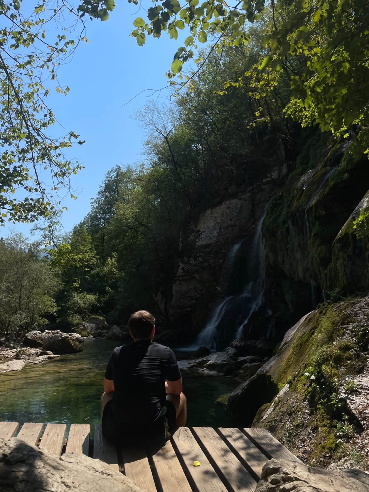

THE OTHER HALF OF SHOWING UP
Muscles in the gym.
Life on the couch.
You don’t have to earn a quiet afternoon.

LESS PRESSURE / MORE ROOM TO GROW
Rest is allowed. Full stop.
A quiet day does not erase a good week. Leave some space between the things you do and the things you expect of yourself.
- Put the workout log away for an evening.
- Settle into a game of CS2, a film or a book.
- Let tomorrow’s session be tomorrow’s problem.
Take the scenic route.
There’s more to movement than sets. A gentle walk, a familiar path and time with an older dog can be the whole plan.
- Choose a route that feels manageable today.
- Let the pace follow the company, not the watch.
- Stop to notice something you would usually pass.
Turn the volume down.
Some days the brain keeps talking long after the workout ends. A small pause can give the day a softer ending.
- Write down one thing taking up space in your head.
- Choose one small thing that can wait.
- Make room for a conversation with someone you trust.